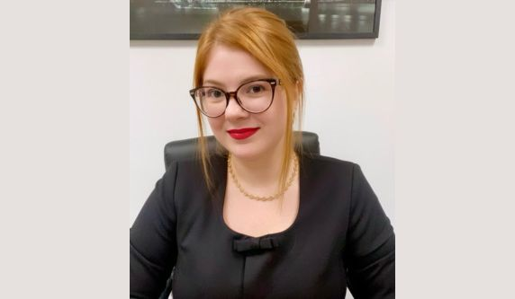

A equipe do escritório CALIDONE RECCHIA é especializada em seus núcleos de atuação, visando sempre oferecer o melhor atendimento e ferramentas de sucesso para as demandas apresentadas pelos(as) nossos(as)clientes em todas as instâncias, inclusive Tribunais Superiores.
-
Sonia de Fatima Calidone
Advogada sócia
Especialista em Direito do Trabalho e Processual do Trabalho. Possui ampla atuação tanto no contencioso quando no consultivo trabalhista e sindical. Autora de diversas teses laborais que impactaram o Direito do Trabalho em ações individuais e coletivas.
sonia@calidonerecchia.com.br instagram linkedin -
Maíra Recchia
Advogada sócia
Eleitoralista e especialista em questões de gênero. Atua no contencioso e consultivo das áreas de atuação do escritório, além de ser a responsável pelo núcleo de compliance. Está como atual presidente do Observatório Eleitoral da OABSP (2022/2024), diretora de relações institucionais do IASP, integrante da ABRADEP (Academia Brasileira de Direito Eleitoral e Político), e da CAOESTE (Conferencia Americana de Organismos Electorales Subnacionales por la Transparencia Electoral).
Atuou como observadora internacional das eleições do Parlamento Europeu (jun/2024). Foi Coordenadora Geral do Observatório de Candidaturas Femininas da OAB/SP (2019/2021) e Secretária Geral da Comissão de Direito Eleitoral da OAB/SP (2019/2021). É consultora do Políticas de Saias, integrante do MeToo Brasil, sócia efetiva do IASP (Instituto dos Advogados de São Paulo) e membra da Comissão Feminista da ABRAT (Associação Brasileira de Advogados Trabalhistas). Também é fundadora da rede de amparo para mulheres denominada PraElas, integrante da Rede Feminista de Juristas (deFEMde), da Associação Brasileira de Mulheres em Carreiras Jurídicas (ABMCJ) e do Advogadas do Brasil (CAB). Foi diretora jurídica da Câmara Municipal de Jaguariúna, conselheira do Conselho Municipal dos Direitos da Mulher de Itapira/SP e Presidenta da Comissão da Mulher Advogada da 95ª Subseção da OAB/SP (triênio 2016/2017/2018). Além de exercer a advocacia com ênfase em direito público, é palestrante e autora de artigos sobre violência política de gênero.
instagram linkedin -
Ana Claudia Pompeu
Advogada
Pós-graduada em direito processual civil. Especialista em direitos das mulheres, violência doméstica, proteção de grupos vulneráveis e direito antidiscriminatório. Possui artigos publicados e vasta experiência em ações de âmbito cível e compliance.
ana@calidonerecchia.com.br instagram linkedin -
Talita Cristina Pimenta Greco
Advogada
Possui MBA em Gestão Empresarial pela Fundação Getúlio Vargas e em Direito Corporativo e Compliance pela Escola Paulista de Direito. Pós-graduada em Direito Público pela FAAP e Pós-graduanda em Direito Eleitoral pela Escola Paulista da Magistratura TRE/SP.
talita@calidonerecchia.com.br instagram linkedin -
Flavia Carolina Cosentino Bomfim
Advogada
Advogada com ampla experiência nas áreas contenciosa e consultiva, com forte atuação em Direito Público, defendendo os interesses de agentes políticos, servidores públicos e empresas contratadas pelo poder público, em processos administrativos e judiciais. Também possui sólida prática na defesa e consultoria jurídica para empresas privadas e seus clientes, com a gestão de litígios e elaboração de estratégias, sempre com foco na mitigação de riscos e na conformidade legal.
flavia@calidonerecchia.com.br instagram linkedin -
Luis Victor Marchioretto Cavenaghi
Advogado
Possui ampla atuação em direito do trabalho contencioso e consultivo, direito sindical em ações individuais e coletivas, além de acompanhar perícias médicas e técnicas em procedimentos administrativos e judiciais correlatas.
luis@calidonerecchia.com.br instagram linkedin -

Priscila de Paula Kaam
Advogada
Pós-graduada em Direito Eleitoral e Processual Eleitoral pela Faculdade IBMEC São Paulo. (2022). Pós-graduanda em Direito da Família e Sucessões pelo IBDFAM.
priscila@calidonerecchia.com.br instagram linkedin -

Ana Caroline Vasconcelos Silva Reis
Advogada
Mestra em direitos coletivos e cidadania. Especialista em direito Eleitoral e em Direitos Humanos. Atuante em Direito Digital e Lei Geral de Proteção de Dados (LGPD). Professora.
anacaroline@calidonerecchia.com.br instagram linkedin -
Catia Aparecida Batista
Bacharel em Direito
Controladora Jurídica e responsável pelo núcleo de atendimento a clientes.
catia@calidonerecchia.com.br instagram linkedin -
THAIS BRANDÃO PEREIRA
Secretária executiva
Presta auxílio e assistência às sócias e aos clientes do escritório com atividades operacionais de excelência que são essenciais para a dinâmica de trabalho.
thais@calidonerecchia.com.br instagram linkedin -
JOSÉ EDUARDO DE MELO
Estagiário
Graduando pela Pontifícia Universidade Católica de Campinas, atuante no contencioso civil e trabalhista no apoio ao corpo jurídico com elaboração de peças, pesquisas.
eduardo@calidonerecchia.com.br instagram linkedin -
DILMA MARIA DA SILVA
Secretária
Responsável pela gestão administrativa e operacional do escritório.
dilma@calidonerecchia.com.br instagram linkedin